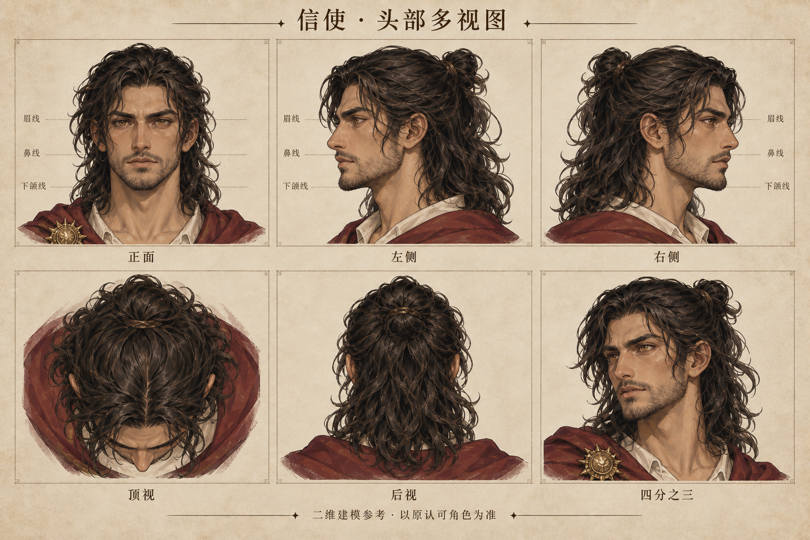
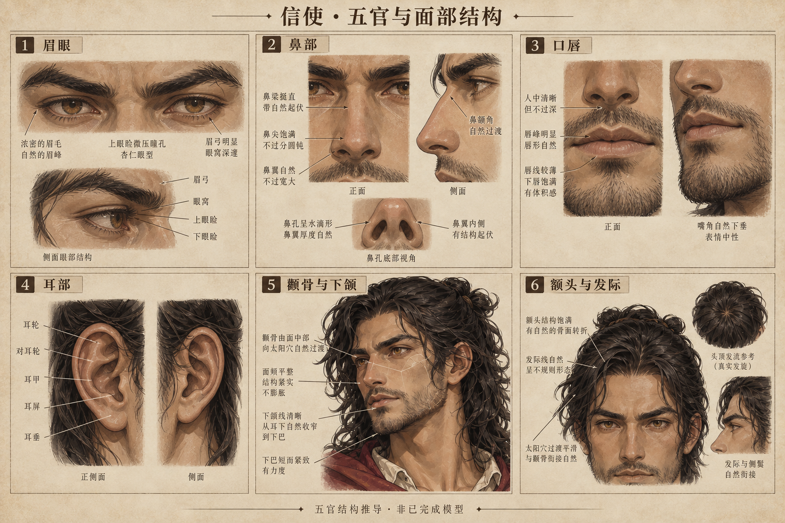

信使：三轮头部、两轮动作与布料
独立角色迭代。使用原认可图及动作参考包；尚未替换原游戏/Godot角色。
原目标与动作帧参考 · 本轮记录与检查范围
下载第二轮 Blender 动画文件 · 时间轴分段说明
走、跑、跳、翻墙均可拖动进度条检查。布料使用可重复的变形与避让，尚不是引擎实时布料模拟；手脚检查也不能替代完整游戏碰撞测试。面部贴合程度仍按认可参考图验收。
认可的头部与五官参考


头部每轮同机位对照
两轮动作与衣摆、斗篷录像
Blender 实际烘焙画面